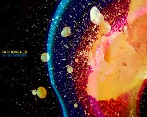

<ion-header>
  <ion-navbar>
    <ion-title>
      Ionic Blank
    </ion-title>
  </ion-navbar>
</ion-header>

<ion-content id="content" color="dark">

<!--1-->
  <ion-list>
    <ion-item-sliding *ngFor="let lugar of lugares">
      <ion-item (click)="goToExistingDetailView(lugar)">
        <ion-avatar item-start>
          
        </ion-avatar>
        <h2>{{lugar.nombre}}</h2>
        <h3>{{lugar.direccion}}</h3>
        <p>{{lugar.categoria}}</p>
      </ion-item>
      <ion-item-options side="right">
        <button ion-button color="danger" (click)="deleteLugar(lugar)">
          <ion-icon name="trash"></ion-icon>
          Eliminar
        </button>
      </ion-item-options>
    </ion-item-sliding>
  </ion-list>
  
  <ion-fab bottom right>
    <button ion-fab (click)="goToDetailView()">+</button>
    <!--2-->

  </ion-fab>
</ion-content>
<!-- 3 -->

<!-- 3
  <ion-footer>
  <p>Soy el footer</p>
</ion-footer>    -->


<!-- 1
  <button ion-button color="dark" (click)="navegarALugar('Primer Lugar')">Primer Lugar</button>
  <button ion-button color="dark" (click)="navegarALugar('Segundo Lugar')">Segundo Lugar</button> -->
  <!-- <button ion-button color="secondary">Navegar a Segundo Lugar</button>
  <button ion-button color="light">light</button>
  <button ion-button>Default</button>
  <button ion-button color="secondary">Secondary</button>
  <button ion-button color="danger">danger</button>
  <button ion-button color="dark">dark</button> -->

  <!-- <ion-list>
    <ion-item-sliding>
      <ion-item>
        <ion-avatar item-start>
          
        </ion-avatar>
        <h2>Slimer</h2>
      </ion-item>
      <ion-item-options side="left">
        <button ion-button color="primary">
          <ion-icon name="text"></ion-icon>
          Text
        </button>
        <button ion-button color="secondary">
          <ion-icon name="call"></ion-icon>
          Call
        </button>
      </ion-item-options>
      <ion-item-options side="right">
        <button ion-button color="primary">
          <ion-icon name="mail"></ion-icon>
          Email
        </button>
      </ion-item-options>
    </ion-item-sliding>
  </ion-list> -->


      <!-- 2
      <ion-fab-list side="top">
      <button ion-fab>Facebook</button>
      <button ion-fab>Twitter</button>
      <button ion-fab>YouTube</button>
    </ion-fab-list>
    <ion-fab-list side="left">
      <button ion-fab>Vimeo</button>
    </ion-fab-list> -->